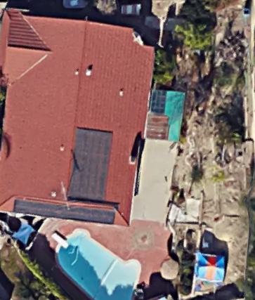

Time for a Treasure Hunt
Here's an aerial view of our backyard. Try to guess what parts of the backyard you are clicking on in the blueprint. Bonus for finding the dog bowl on the 1st try!


Yes! But not the kind of farm you're thinking of. We live in a residential area with a spacious backyard. Our farm was all dry clay before we started tilling it and developing it. We don't have a red barn door, but you'll see farm animals and vegetables growing in our backyard.
We started farming this year. Previously I had gardened in the backyard, but nothing really grew since the clay baked soil was so stingy. However, we bought some fertile soil and created our own compost so now the vegetables are thriving. We've grown Asia Alpine cabbage, tomatoes, green beans, green onions and more!
If you love sinking your fingers into rich soil and handling animals, starting a farm is a great option. You also need space to plant your vegetables and good climate, so a lot of sun. You can also let your farm animals free range if you have enough space.
You can buy most of your equipment at Lowes or Home Depot. We made our coop and garden bed with scrap materials so if you have pieces of wood lying around, be creative!
There are great benefits like enjoying organic vegetables and watching your chickens grow.